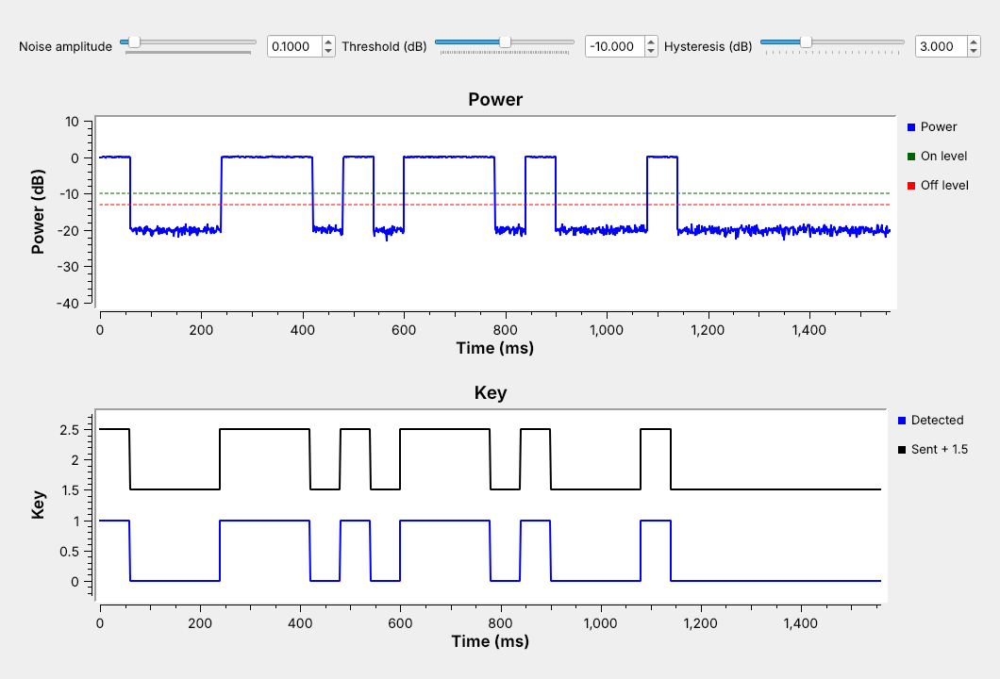
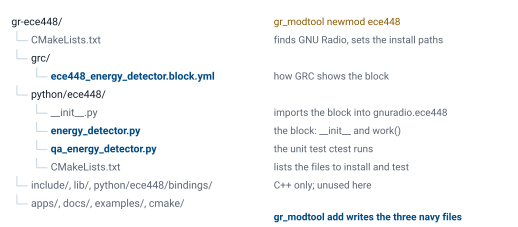
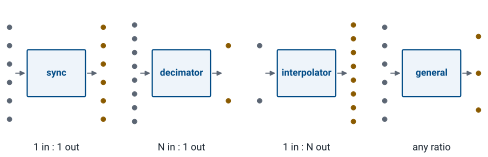
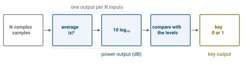
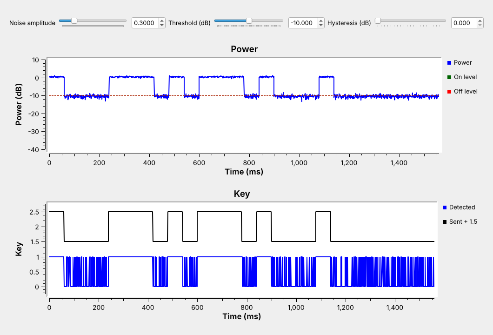
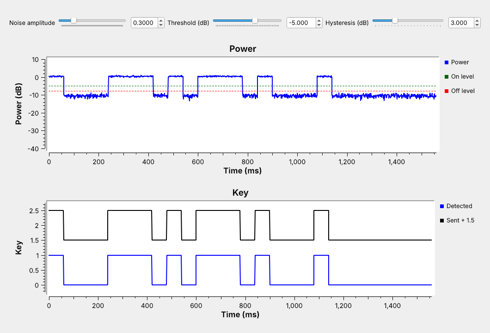

L11 - Out-of-Tree Modules and Custom Blocks#
Out-of-Tree Modules and Custom Blocks
A block of our own, packaged with gr_modtool: an Energy Detector that turns a keyed carrier into a key.
Lesson 11 · Module 5: Custom Blocks & Midterm · Dr. Neil Rogers
Slides
Learning Objectives
- I can create a GNU Radio out-of-tree (OOT) module and add a custom Python block to it.
- I can implement a custom signal-processing block from scratch and integrate it into a GNU Radio flowgraph.
A Keyed Carrier

A carrier keyed on and off spells Morse “ECE” in noise.
Our own block turns it into a key: 1 while the carrier is on.
The figure is today’s flowgraph, L11-keyed-carrier.grc, running. A 1 kHz tone at 32 kHz sampling switches on and off in the pattern of Morse code for “ECE” at 20 words per minute, so each dit lasts 60 ms, and a Noise Source adds Gaussian noise. The top plot is the signal’s average power in dB, and the bottom plot compares the key our block makes with the keying the flowgraph sent, raised by 1.5 so the two traces do not overlap.
No block in GNU Radio’s library makes that key directly, so we write one: the Energy Detector. It is the first block in a module of our own, gr-ece448. Lesson 12 can reuse it to receive CW, and at the end of this lesson the same block keys on the bursts of a 433 MHz remote.
From Embedded Block to Module
Embedded Python Block |
OOT module |
|
|---|---|---|
Code lives in |
one |
its own directory |
Reuse |
copy and paste |
any flowgraph, like a stock block |
Testing |
by eye |
a unit test |
Lesson 8’s Text Sink is an Embedded Python Block: GRC saves its code inside the .grc file, and Lesson 10 had to paste the same code into its own flowgraph. That is the right tool for a block one flowgraph needs. A block several flowgraphs need belongs in an out-of-tree (OOT) module, a separate package of blocks that installs beside GNU Radio’s own. GNU Radio’s library is the “tree”, so a module we build ourselves is “out of tree”. After we install it, the block appears in GRC’s library like any other block, every flowgraph uses the same code, and a unit test checks that code each time we build it.
Follows: GNU Radio wiki, Embedded Python Block.
Part 1: Make the Module
gr_modtool newmod ece448
cd gr-ece448
gr_modtool add -t decimator -l python energy_detector
newmodmakes the empty module;addmakes one block.
gr_modtool comes with GNU Radio and writes the files of a module for us. gr_modtool newmod ece448 makes a directory named gr-ece448 with the build files and empty folders. Inside it, gr_modtool add asks for the block’s type and language, which the flags -t decimator -l python give on the command line. It then asks for a copyright holder, the constructor’s arguments, which we give as decim=32, threshold_db=-20.0, hysteresis_db=3.0, and whether to add a Python unit test, which we accept.
Follows: GNU Radio wiki, Creating Python OOT with gr-modtool.
The Module Tree

The block, its GRC file, and its test are three files.
The C++ folders hold no block code in a Python-only module.
gr_modtool add writes three files and edits three more. energy_detector.py is the block, qa_energy_detector.py is its unit test, and ece448_energy_detector.block.yml tells GRC how to draw it. It adds an import line to __init__.py, so from gnuradio import ece448 finds the block, it lists the test in python/ece448/CMakeLists.txt, and it adds the YAML file to grc/CMakeLists.txt, which installs it.
On GNU Radio 3.10.9, Ubuntu 24.04’s version, gr_modtool misses one edit: it does not add energy_detector.py to the gr_python_install(FILES ...) line in that CMakeLists.txt, so the module installs without its block. Radioconda’s 3.10.12 makes the edit. On either version, check that the line reads FILES __init__.py energy_detector.py before building.
Four Kinds of Block

The type fixes how many outputs each input makes.
The Energy Detector makes one output per N inputs, so it is a decimator.
GNU Radio’s scheduler calls a block’s work() function with a buffer of input samples and room for some output samples, and the block type tells it how the two counts relate. A sync block makes one output per input, like Multiply Const. A decimator makes one output per \(N\) inputs, like a decimating filter, and an interpolator makes \(N\) outputs per input, like Repeat. A general block reports how many inputs it used and how many outputs it made each time, which is the right type when the ratio changes, as in Correlate Access Code, which passes only the bits of a packet. Choosing the most specific type that fits lets GNU Radio manage the buffers, and the block’s code stays short.
Part 2: The Energy Detector

The block takes one complex input and makes two float outputs, power in dB and the key.
The key turns on above the threshold and off below threshold minus hysteresis.
For each run of \(N\) input samples, the block averages the magnitude squared, which is the average power, and outputs it in dB on its first output. A tone of amplitude 1 reads 0 dB, and with the carrier off the output sits at the noise floor, which the Power plot shows. The second output is the key. It switches to 1 when the power rises above the threshold, and back to 0 only when the power falls below the threshold minus the hysteresis. With \(N = 32\) at 32 kHz, the block makes one output per millisecond.
The work() Function
def work(self, input_items, output_items):
n = len(output_items[0])
x = input_items[0][:n * self.decim].reshape(n, self.decim)
power_db = 10 * np.log10(np.mean(x.real**2 + x.imag**2, axis=1) + 1e-12)
for i, p in enumerate(power_db):
if self.key == 0.0 and p > self.threshold_db:
self.key = 1.0
elif self.key == 1.0 and p < self.threshold_db - self.hysteresis_db:
self.key = 0.0
output_items[1][i] = self.key
output_items[0][:] = power_db
return n
GNU Radio hands work() room for n outputs on each output port, and because the block is a decimator, exactly n * decim inputs. The reshape lines the inputs up as n rows of decim samples, so NumPy averages each row in one call, and the small 1e-12 keeps the log finite when a run is all zeros. The loop runs once per output, not once per input, and self.key carries the key’s state from one call to the next. The constructor, in the same file, calls gr.decim_block.__init__ with in_sig=[np.complex64], out_sig=[np.float32, np.float32], and decim=decim, and stores the three arguments. Two short methods, set_threshold_db and set_hysteresis_db, let a slider change the levels while the flowgraph runs.
The Block’s YAML File
id: ece448_energy_detector
label: Energy Detector
category: '[ECE 448]'
templates:
imports: from gnuradio import ece448
make: ece448.energy_detector(${decim}, ${threshold_db}, ${hysteresis_db})
callbacks:
- set_threshold_db(${threshold_db})
- set_hysteresis_db(${hysteresis_db})
The rest of the file has one entry per parameter, input, and output.
GRC never reads the Python file. It reads grc/ece448_energy_detector.block.yml, which names the block, puts it in an “ECE 448” category, and gives the line of Python that GRC writes into the flowgraph’s generated script: the make template, with each ${...} replaced by the value in the block’s properties dialog. The callbacks let GRC call the setters when a slider moves. Below this, the file lists the three parameters with their labels, types, and defaults, the complex input, and the two float outputs, power and key. The template from gr_modtool has placeholders for each, and the download has the finished file.
Part 3: Test the Block
def test_002_hysteresis(self):
p_db = np.array([-30, -19, -21, -22, -24, -21, -19, -25])
x = (10 ** (p_db / 20)).astype(np.complex64)
power, key = self.run_detector(x, 1, -20.0, 3.0)
self.assertFloatTuplesAlmostEqual(power, p_db, 4)
self.assertFloatTuplesAlmostEqual(key, [0, 1, 1, 1, 0, 0, 1, 0])
The test runs the block on inputs whose answer we know.
qa_energy_detector.py builds a small flowgraph, a Vector Source into the block and two Vector Sinks out of it, runs it, and compares the outputs with the expected values. In the test above each output averages one sample, so the powers are the inputs in dB. The key turns on at \(-19\) dB, above the \(-20\) dB threshold, stays on through \(-21\) and \(-22\) dB, and turns off at \(-24\) dB, below \(-23\) dB. The file holds four tests: the block constructs, three amplitudes give 0, \(-20\), and \(-40\) dB, the hysteresis case above, and a keyed tone in noise 30 dB down that must give a key of exactly 50 outputs on and 50 off, five times.
Build, Test, and Install
mkdir build && cd build
cmake -G Ninja -DCMAKE_INSTALL_PREFIX=${CONDA_PREFIX} \
-DCMAKE_PREFIX_PATH=${CONDA_PREFIX} ..
cmake --build .
ctest --output-on-failure
cmake --install .
ctestruns the unit test before we install anything.
A Python-only module has nothing to compile, but CMake still copies its files to the right places, and ctest runs its tests against the build directory. CMAKE_PREFIX_PATH tells CMake to find the radioconda environment’s GNU Radio, and CMAKE_INSTALL_PREFIX installs into the same environment, so the block goes where that GNU Radio looks: the Python file under its site-packages/gnuradio/ece448/, and the YAML file under share/gnuradio/grc/blocks/. These steps build, test, and install the module under GNU Radio 3.10.12 from conda-forge on Linux, and under Ubuntu’s 3.10.9 with make in place of Ninja. A passing ctest prints 100% tests passed, 0 tests failed out of 1: its one entry runs the four test methods in qa_energy_detector.py. Restart GRC after installing so it reloads its block library.
Follows: GNU Radio wiki, Creating Python OOT with gr-modtool.
The Block in GRC
![The L11 keyed-carrier flowgraph in GNU Radio Companion: a Vector Source of the Morse pattern, Repeat, Float To Complex, and Multiply with a Signal Source make the keyed tone; a Noise Source and Add put it in noise; a Throttle feeds the Energy Detector block, with Samples Averaged 32, Threshold minus 10 dB, and Hysteresis 3 dB; its power output goes to a time sink with two Constant Sources for the levels, and its key output goes to a second time sink beside the sent keying from Keep 1 in N and Add Const](../../viz/img/L11-grc-keyed.png)
The installed block sits in the library under ECE 448.
The block labels its two outputs
powerandkey.
Once installed, the Energy Detector is an ordinary block: you search for it in GRC’s block library, drag it onto the canvas, and set its three parameters in its properties dialog, here with the sliders threshold and hyst as values. The rest of the flowgraph builds the test signal. A Vector Source holds the Morse pattern, one entry per 60 ms unit, and a Repeat holds each entry for 1920 samples; multiplying by a 1 kHz Signal Source keys the tone. A Keep 1 in N with \(N = 32\) brings the sent keying down to the detector’s 1 kHz output rate for the comparison plot.
Threshold and Hysteresis

With the threshold on the noise floor, the key chatters.
Hysteresis alone cannot fix a threshold in the wrong place.
At a noise amplitude of 0.3, the Power plot shows the noise floor near \(-10.5\) dB, right at the \(-10\) dB threshold. With no hysteresis, every averaged output that crosses the line flips the key, so the key chatters through every gap, and a Morse decoder downstream would read each flip as a dit. Adding 3 dB of hysteresis with the threshold where it is makes things worse: the key turns on and then rarely falls below \(-13\) dB, so it stays on nearly all the time, and the threshold must move up before hysteresis can help.
Setting the Levels

Put both levels between the floor and the signal.
Hysteresis then keeps noise near the threshold from switching the key.
Read the two levels off the Power plot: with the carrier on, the power sits just above 0 dB, and with it off, near \(-10.5\) dB. Raising the threshold to \(-5\) dB puts the on level at \(-5\) dB and the off level at \(-8\) dB, both well inside that 11 dB gap, and the key follows the keying exactly. A good rule is to set the threshold about halfway between the floor and the signal on the plot, and the hysteresis a little larger than the floor’s ragged up-and-down, so noise near the threshold cannot switch the key.
Energy Detector Explorer
The top panel is the detector’s power output for one sending of “ECE”, and the bottom panel compares the key with the keying the flowgraph sent, shaded red where they differ. It starts where the chatter screenshot did: noise amplitude 0.3, threshold \(-10\) dB, no hysteresis. Raise the threshold to \(-5\) dB and add 3 dB of hysteresis, and the key changes 11 times, as the keying does. Then change the samples averaged. Averaging 8 samples gives a ragged floor and a 0.25 ms output; averaging 64 gives a smoother floor and a 2 ms output, and a dit is still 30 outputs long.
How Many Samples to Average
The power of one noise sample jumps around a lot, so a single sample tells us little. Averaging more samples smooths it: in the explorer above, 8 samples give a ragged floor that wanders a dB or two, and 64 give a floor that barely moves. A smoother floor lets the threshold and hysteresis sit closer to the noise.
Averaging more samples takes more time: each output covers \(N/f_s\) seconds, and an edge in the keying can land anywhere inside one output. At 32 kHz, \(N = 32\) gives 1 ms outputs. A dit at 20 words per minute is 60 ms, so it spans 60 outputs, and even \(N = 64\), 2 ms, leaves 30 outputs per dit. A faster signal needs a shorter average: the 433 MHz remotes below send pulses a few hundred microseconds long, so their flowgraph averages 4 samples at 128 kHz, about 31 \(\mu\)s per output.
On Your Laptop
Every radioconda install has
gr_modtool.CMake needs a C++ compiler, even for a Python-only module.
On Windows, the fallbacks are WSL2 with Ubuntu, then an Embedded Python Block.
Radioconda installs GNU Radio from conda-forge, and its gnuradio-core package includes gr_modtool on Linux, macOS, and Windows, where it is gr_modtool.exe. Radioconda has no CMake and no compiler, and the project() line of a module’s top-level CMakeLists.txt declares C and C++, so CMake stops at that line without a compiler, even when the module has no C++. The package gnuradio-build-deps, installed with conda install -c conda-forge gnuradio-build-deps, adds CMake, Ninja, and a compiler. On Linux that compiler is complete. On macOS the conda compiler does not include Apple’s SDK, which xcode-select --install provides; we have not tested this route on a Mac. On Windows, conda-forge’s gnuradio-build-deps pulls in vs2022_win-64, which only locates an existing Visual Studio 2022 installation, so a Windows laptop also needs Microsoft’s Visual Studio 2022 Build Tools, a large separate install; we have not tested this route either.
A Windows laptop without them has two other routes. The first is WSL2 with Ubuntu 24.04: inside it, sudo apt install gnuradio-dev cmake g++ installs GNU Radio 3.10.9 and a compiler, the module builds exactly as on Ubuntu, and WSLg runs GRC in a window; we have tested the Ubuntu 24.04 route but not WSL itself. The second needs nothing installed: L11-keyed-carrier-epy.grc has the same energy_detector class pasted into an Embedded Python Block, renamed blk, and runs identically. The block’s code, its tests, and its YAML file move into a module unchanged on any Linux or macOS machine, such as a teammate’s in the lab.
OOK on a PlutoSDR

Many 433.92 MHz remotes and sensors use on-off keying (OOK).
The same block keys on their bursts, received on the PlutoSDR.
On-off keying sends a 1 as a burst of carrier and a 0 as silence, the same signal as today’s keyed tone, only faster. Weather sensors, doorbells, and some remotes in the U.S. use on-off keying at 433.92 MHz, as low-power unlicensed devices under FCC Part 15. L11-ook-pluto.grc tunes the PlutoSDR 200 kHz below 433.92 MHz at 1.024 MS/s, so the signal stays clear of the radio’s center, where the Pluto removes its own DC offset and a small spike can remain. A Frequency Xlating FIR Filter shifts the signal to 0 Hz and decimates to 128 kHz, and the Energy Detector runs with \(N = 4\).
First find the bursts: run the flowgraph, press the remote, and each press paints a short streak on the waterfall. The Pluto’s gain is manual, from the RX gain slider, because an automatic gain would ramp up between bursts and move the floor under the threshold. The time sink draws the key at \(-60\) dB when it is off and \(-40\) dB when it is on, so it shares the power plot’s axis. Set the threshold halfway between the floor and the burst level on the power plot, press a remote nearby, and the key traces its bursts. Optional: rtl_433, a ready-made decoder for hundreds of these devices, names the device and prints what it sent, the same job done by someone else’s block; it runs on an RTL-SDR, or on the Pluto through SoapySDR.
The flowgraph only receives. This page has not run it, because it needs a PlutoSDR and a remote, so the figure shows the flowgraph in GRC, not a capture.
Key Point
A block several flowgraphs need belongs in an out-of-tree module: gr_modtool writes the files, we write work(), the YAML file, and a unit test, and CMake builds, tests, and installs it.
Downloads
L11-gr-ece448.zip: the
gr-ece448module, with the Energy Detector, its YAML file, and its unit test. ItsREADME.mdlists the build steps.L11-keyed-carrier.grc: Morse “ECE” as a keyed carrier in noise, through the installed Energy Detector, with noise, threshold, and hysteresis sliders. Needs
gr-ece448installed; no hardware.L11-keyed-carrier-epy.grc: the same flowgraph with the Energy Detector in an Embedded Python Block. Needs nothing installed.
L11-ook-pluto.grc: the Energy Detector on a PlutoSDR at 433.92 MHz, for OOK remotes, with a waterfall to find the bursts. Needs
gr-ece448and a PlutoSDR; receive only.
Unzip the module, then follow its README.md from the radioconda prompt. Open a .grc file from GRC’s File menu, or run gnuradio-companion L11-keyed-carrier.grc.
Tutorials this lesson follows, on the GNU Radio wiki:
Summary
Idea |
What it is |
Detail to remember |
|---|---|---|
Embedded Python Block |
a block saved inside one |
right for one flowgraph |
OOT module |
a package of blocks installed beside GNU Radio |
|
Block types |
sync, decimator, interpolator, general |
1:1, \(N\):1, 1:\(N\), any ratio |
Block files |
|
check |
Build |
CMake, |
install into the radioconda environment |
Energy Detector |
average power in dB, keyed with hysteresis |
read the floor off the Power plot |
Levels |
threshold halfway, hysteresis above the floor’s ragged edge |
more samples: smoother floor, coarser timing |
Windows |
CMake needs Visual Studio 2022 Build Tools |
fallbacks: WSL2 Ubuntu, then an Embedded Python Block |
Practice
Looking Ahead
The L11 Lab builds the module and adds a block you write yourself.
Lesson 12 turns the key into Morse letters.
The L11 Lab is the hands-on version of this lesson. You build and test gr-ece448 on your laptop, set the detector’s levels for a noisier signal, and then make a module of your own and write a Key Timer block in it, which measures how long each key-down and key-up lasts.
Lesson 12, on CW, receives Morse code. Its receiver uses the Energy Detector to make the key and the timing of the key to tell a dit from a dah, which is the job the Key Timer starts.